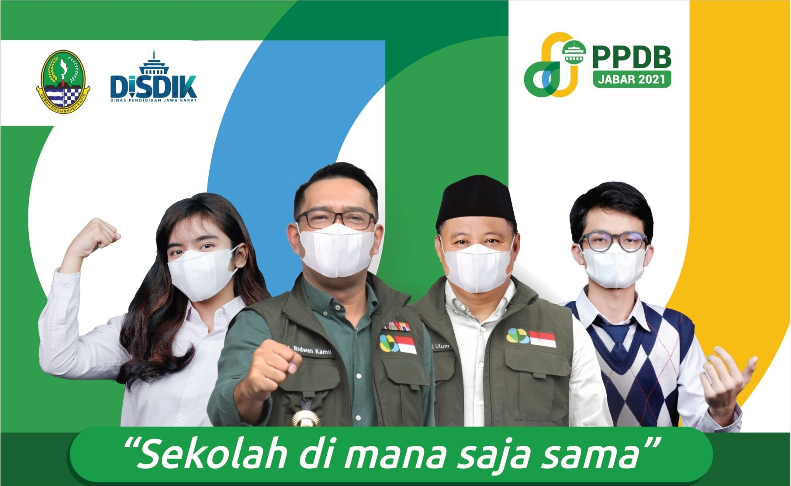

Our Photo
Jl. Soekarno Hatta No.KM. 10, Jatisari, Kec. Buahbatu, Kota Bandung, Jawa Barat 40286
Our Photo
Bandung, Agustus 8 2022

Sekolah Menengah Kejuruan Negeri 13 Bandung adalah sekolah tingkat menengah atas yang mendidik siswanya untuk memiliki keahlian di bidang Kimia Analisis, Teknologi Komputer Jaringan dan Rekayasa Perangkat Lunak.
SMK Negeri 13 Bandung berdiri sejak 1938, bermula dari Pendidikan Analis Kimia dibawah pengelolaan Departemen Kimia Institut Teknologi Bandung dengan nama Sekolah Analis ITB yang dipelopori oleh Prof. C.O. Schaeffer. Kegiatan pembelajarannya dilaksanakan di Kampus ITB Jl. Ganesha No 10 Bandung.
Pada tahun 1988 pengelolaan Sekolah Analis Kimia ITB dialihkan ke Direktorat Pendidikan Kejuruan Departemen Pendidikan dan Kebudayaan berdasarkan Surat Keputusan Menteri Pendidikan dan Kebudayaan No 0454/1988 tertanggal 8 September 1988 dan berganti nama menjadi Sekolah Menengah Teknik Kimia (SMT Kimia) dengan lokasi di Jl. Jenderal Sudirman No 125 Bandung.
Selanjutnya berdasarkan Surat Keputusan Menteri Pendidikan dan Kebudayaan RI No 036/1997 tertanggal 7 Maret 1997 tentang perubahan Nomenklatur SMKTA menjadi SMK serta Organisasi dan Tata Kerja Sekolah Menengah Kejuruan (SMK), maka pada tahun 1998 SMT Kimia berubah nama menjadi SMK Negeri 13 Bandung dengan program keahlian Kimia Analisis sekaligus menempati bangunan baru di Jl Soekarno-Hatta Km 10 Bandung.
Dalam penyelengaraan pendidikan kejuruan, SMK Negeri 13 Bandung bekerja sama dengan Dunia Usaha/Dunia Industri yang relevan serta Komite Sekolah sebagai kelengkapan implementasi Manajemen Berbasis Sekolah, yakni pengelolaan sekolah yang memberdayakan seluruh warga sekolah dan melibatkan semua stakeholder.
Bandung, 9 Juli 2022
Penerimaan Peserta Didik Baru (PPDB) Tahun 2022 resmi dibuka oleh Gubernur Jawa Barat (Jabar), Ridwan Kamil dan Kepala Dinas Pendidikan (Disdik) Jabar, Dedi Supandi di SMKN 2 Bandung, Selasa (17/5/2022).
Kadisdik menyatakan, PPDB tahap 1 dimulai tanggal 6 Juni 2022. "Hari ini, 17 Mei adalah titik awal pembagian akun ke SMP dan MTs.," ujar Kadisdik.
Kadisdik menjelaskan, ada beberapa perbedaan dan perubahan di PPDB tahun ini yang merupakan bagian dari penyempurnaan. Yaitu, PPDB 2022 tidak menggunakan rangking rapor dan ada penambahan jalur zonasi dari 68 menjadi 83 zonasi. Hal ini untuk mengakomodasi daerah-daerah perbatasan.
"Tanggal 6 Juni kita mulai PPDB tahap I jalur afirmasi 20%, perpindahan orang tua 5%, prestasi 25%, dan tahap 2 untuk jalur zonasi sebesar 50%," jelasnya.
Yang afirmasi, lanjutnya, terdiri dari 12% KETM, 3% disabilitas, dan 5% kondisi tertentu. "Jika di tahap 1 jalur afirmasi masih tersisa, bisa ditambahkan ke jalur zonasi," imbuhnya.
Copyright 2022 By Muh Naufal & Andi Putra SMKN 13 Bandung